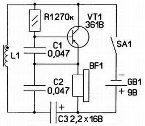
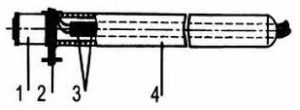

Игра «Минное поле»
Эта занятная игра имитирует действия сапера по обнаружению мин и составлению карты минного поля. Игроки поочередно с помощью «миноискателя» исследуют «минное поле. Поле — это листы плотной бумаги или картона. Цель минера постараться обнаружить спрятанные под «землей» (бумагой) «мины» (монеты, мелкие плоские стальные предметы, магниты, ферритовые кольца). Обнаружив «мину», игрок ставит в этом месте бумажного листа крестик с указанием типа «взрывного устройства». После обхода всего поля лист бумаги снимают и сравнивают полученную карту с реальным расположением «мин». Побеждает тот, кто допустил меньше ошибок (оцениваются точность определения местонахождения и тип каждой «мины»).
Основа игры — «металлоискатель», принципиальная схема которого изображена на рис. 1.

Рис. 1 - Схема «металлоискатель»
По сути, это генератор сигнала звуковой (около 1 кГц) частоты с емкостной обратной связью. Колебательный контур образован катушкой L1 и конденсаторами С1 и С2. Режим работы транзистора VT1 задан резистором R1.
При плавных колебательных движениях катушки L1 над «миной» частота сигнала, воспроизводимого звукоизлучателем BF1, изменяется и вместо монотонного звука слышен звук завывающий.
О типе "взрывного устройства" судят по характеру изменений звука. Поэтому перед тем как заняться составлением карты, участники игры должны потренироваться, чтобы научиться различать «мины» разных типов. Во время игры магнитопровод катушки следует перемешать плавно, слегка покачивая, над поверхностью бумаги.
Возникающая модуляция звука будет свидетельствовать о наличии «мины», дальнейшее исследование окрестностей укажет ее тип.
Детали устройства монтируют на печатной плате, изготовленной из односторонне фольгированного стеклотекстолита размерами 15 мм на 20 мм. Резистор R1 — МЛТ, конденсаторы C1, С2 — любые малогабаритные керамические (например, КМ), С3 — оксидный К53-1, К53-1А, К53-18 Транзистор КТ361В заменим любым маломощным структуры р-n-р со статическим коэффициентом передачи тока h21э не менее 60. Звукоизлучатель BF1 — телефон «Тон-2» (сопротивление постоянному току его обмотки 1600 Ом).
Смонтированную плату вместе со звукоизлучателем, батареей питания и выключателем помещают в пластмассовый корпус подходящих размеров, в одной из стенок которого (напротив телефона) просверлены несколько отверстий. Для питания устройства можно использовать батарею 6F22 («Крона») или несколько соединенных последовательно элементов типоразмера АА (генератор работоспособен при снижении напряжения питания до 1,5В. Следует заметить что при этом потребляемый ток уменьшается с 1,5 до 0,3 мА).
В качестве катушки L1 удобно использовать электромагнит малогабаритного реле РЭС10 с обмоткой сопротивлением 0,7–2 кОм — подойдут реле исполнений РС4 529.031-06 (прежнее обозначение — РС4.524 305), РС4 529.031-13 (РС4 524 316). Аккуратно сняв кожух экран, удаляют якорь и контактную группу, после чего к выводам обмотки 1 (рис. 2) припаивают два тонких многожильных провода 3 и, пропустив их через корпус 4 (от авторучки), приклеивают последний к пластмассовому основанию реле 2. Скрутив провода, их противоположные концы припаивают к соответствующим контактным площадкам платы.

Рис. 2 - Конструкция «металлоискателя»
Для того чтобы во время игры бумажный лист не смещался относительно «мин», его можно приклеить скотчем к столу. Ещё одним вариантом возможной игры может быть имитация процедуры УЗИ.
В муляж-куклу с тонкими пластмассовыми стенками помещают предметы, по характеру которых, после исследования «металлоискателем» делают вывод о состоянии «пациента».